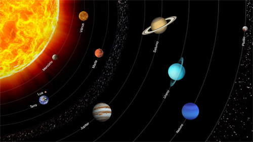
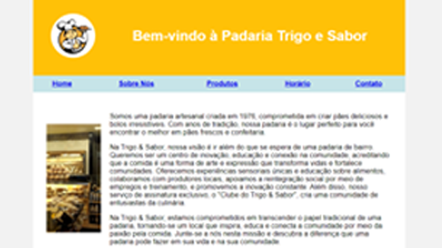
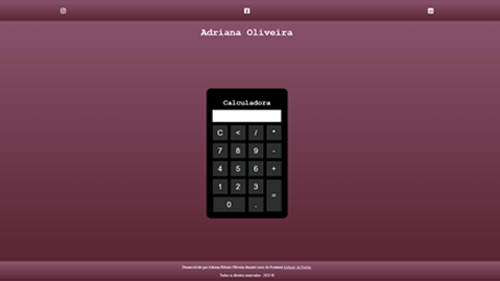
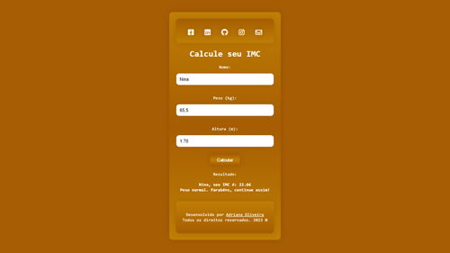
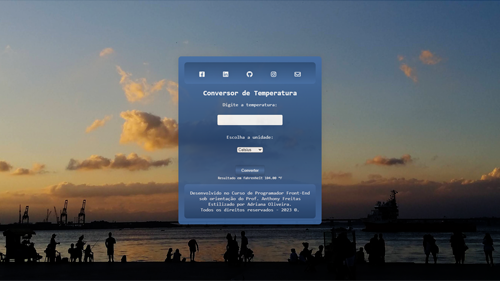
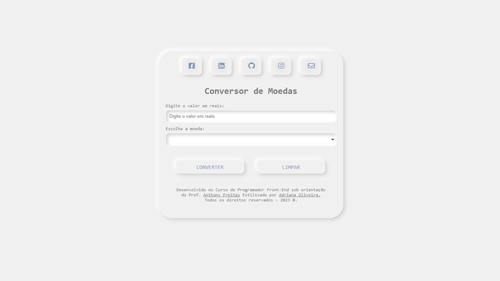

|
Aqui estão alguns projetos que realizei durante o Curso de Front-End do Senac Maracanã.
Bem-vindo à minha galeria de projetos de front-end, onde você poderá explorar meu trabalho como
estudante em busca de aprimoramento em desenvolvimento web. Cada projeto exibido aqui é um
passo em minha jornada de aprendizado.
-
Projeto 01:Planetas em Tabela

Criar uma página em tabela foi uma tarefa e tanto. Mas com apoio da turma e atenção do professor, acho que dei conta.
Como iniciante, não me faltou a empolgação de visualizar o resultado. Ao longo do processo, a
criatividade surgiu como resultado de outra paixão; o Photoshop. Quem não ama observar o Espaço? Chegar nesse resultado foi bem divertido.
-
Projeto 02: Padaria Trigo e Sabor

Como estudante de front-end, a criação de uma One Page para uma padaria fictícia
representou uma nova etapa na introdução ao mundo do desenvolvimento web.
Foi o momento de colocar em prátia os conceitos iniciais que aprendi, também me
desafiou a exercitar minha criatividade e habilidades de design.
Entender como deve ser uma estrutura organizada e sólida no HTML, é essencial para quem está começando,
e depois de tudo isso o CSS, mostra seus encantos.
-
Projeto 03:Calculadora

Que coisinha complexa é uma calculadora!
Com esse projeto, chegou hora de aprender e colocar o JavaScript em prática e ver em cada linha de código, a lógica de cálculo fazendo
a mágica acontecer. Foi uma jornada emocionante e desafiadora.
Inicialmente, assustou, mas com professor paciente e uma turma dedicada, mais uma tarefa foi cumprida.
-
Projeto 04:Calculadora IMC

Durante o desenvolvimento desse projeto, minha curiosidade em relação à experiência dos usuários ao
interagir com uma ferramenta digital, só me deu mais vontade de aprender.
Tornando o aprendizado com o professor e a turma incrivelmente, valioso e recompensador.
-
Projeto 05: Conversor de Temperatura

Nesse projeto o professor apresentou um pouco mais de JavaScript e como já estamos
no finalzinho do curso, usar as referências anteriores, não faz mal para ninguém.
O estilo foi por nossa conta e como a fotografia é outra paixão, meu registo do pôr do Sol me pareceu
um bom background.
Talvez, eu tenha pecado no azul do container, mas a experimentação é isso.
-
Projeto 06: Conversor de Moedas

Último projeto, chegamos ao fim do curso e esse é meu xodó.
As referências anteriores estão presentes, porém, aqui, o CSS foi além, ele me deu a chance de testar algo
que sempre quis.
Como o professor nos deixou livres para estilizar, minha escolha foi usar o neumorfismo, design que me encantou
por sua estética tridimensional suave, moderna e visualmente atraente.
Embora o neumorfismo enfrente críticas e desafios por suas falhas de acessibilidade,
equilibrar seus aspectos positivos, pode agregar valor ao design de
interfaces digitais.
|